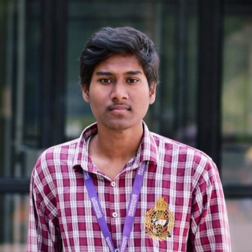
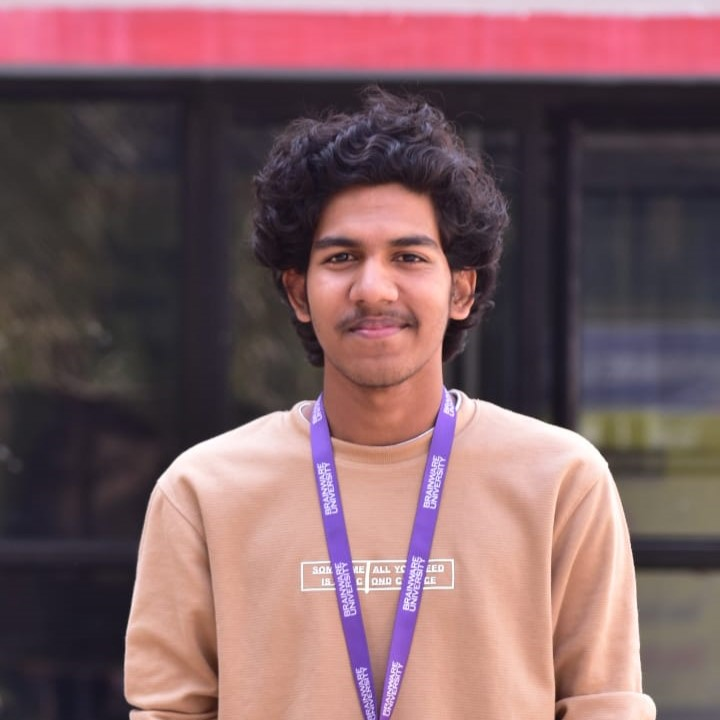
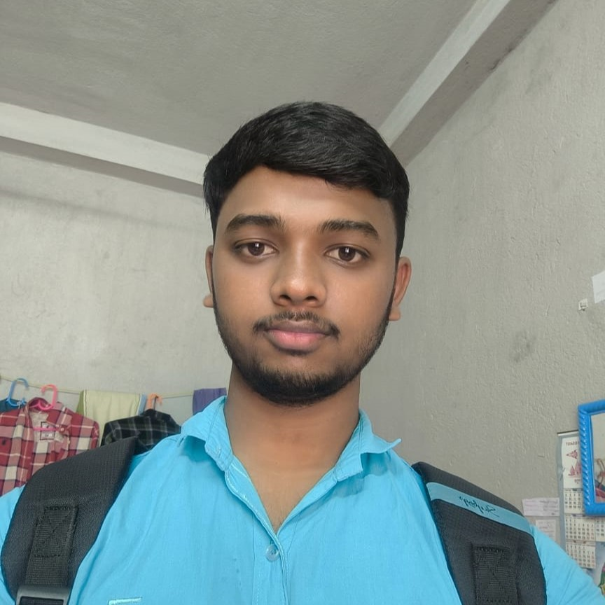

Community
Home
Resume
Contact
Rudradip Mukherjee
BCA (Pursuing)
Know More +
Sayan Maity
BCA (Pursuing)
Know More +

Saptadip Parshi
BCA (Pursuing)
Know More +
Debasish Barman
BCA (Pursuing)
Know More +

Subradip Parshi
BCA (Pursuing)
Know More +
Shashwata Banerjee
BCA (Pursuing)
Know More +

Dibyendu Pradhan
Diploma (R.A.)
Know More +
Baisakhi Dutta
B. Sc. (IT)
Know More +
×
Quick Links
Home
Education
Resume
Achievements
Resources
Top Skills
Visit Sites
CodeCrafter
SnapSafari
ADOPT MEEE
BloomAz
FiberFlow
Student Portal
Follow Me
Facebook
Instagram
Linkedin
Pinterest
Telegram
Youtube
Contact Location